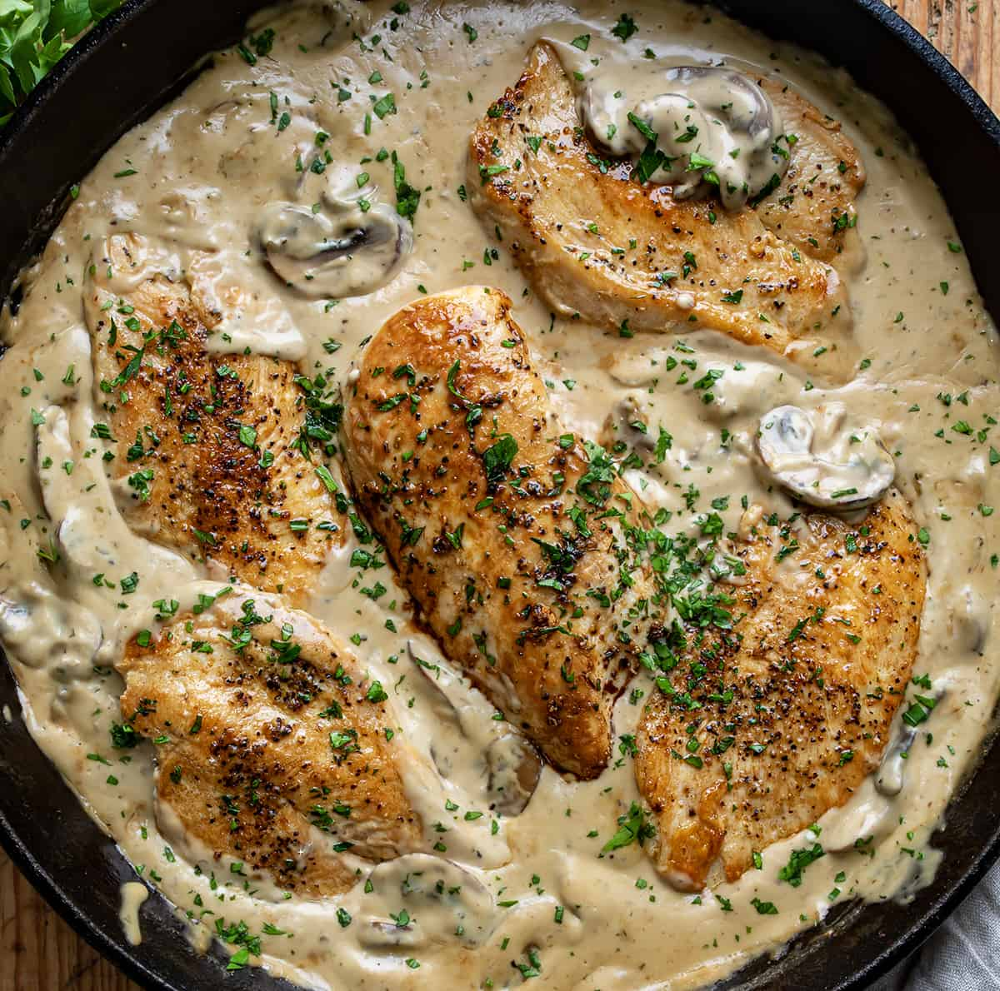

Smothered Chicken and Broccoli
Home

Looking for a romantic recipe that's hard to fumble? This smothered chicken and mash potatoes recipe should do the trick! It's quick and easier than you might think. Plus it's good way to stretch your cooking abilities by adding in a few ingredients you might not use very often like mushrooms and heads of garlic.
I added broccoli to this recipe for a few reasons. 1. My girlfriend loves it. 2. I felt it needed a vegetable to pair it with. You're welcome to replace it with another vegetable like spinach or greens or string beans, or simply omit it entirely if you'd prefer.
Lastly, this recipe pairs well with my Quick n Easy Mashed Potatoes recipe. The sauce you make works perfectly as a gravy so you simple pour it over the potatoes and voila! That said, here's the recipe:
Ingridients (Serves 2)
- 2 large boneless, skinless chicken breasts
- 2 garlic bowls
- 8 oz mushrooms (white, cremini or button, thin sliced)
- 2 cups of broccoli
- 2 tbsp Parmesan cheese
- 1/2 cup shredded mozzarella cheese
- 1/4 cup White Wine
- 2 tbsp olive oil or butter
- 1/2 cup chicken Stock
- 1/2 cup Heavy Cream
- 1/2 tsp garlic powder
- 1/2 tsp onion powder
- 1/2 tsp smoked paprika (optional for spice)
- Salt and black pepper to taste
Instructions
- If you have time, I would reccomend marinating your chicken for between 1-24 hours. Obviously this is only if you have some time to plan ahead, but it can amp up the flavor and tenderness of the chicken. That said it isn't necessary by any means and the dish will still be delicious. If you have time for the marinade, simply place the chicken breasts into a bowl and add in the salt, pepper, garlic powder, onion powder and parika with olive oil. Mix this thoroughly and put cover tightly with saran wrap. Alternatively, you can mix and seal your chicken inside a gallon ziplock bag. Otherwise, simply season your chicken instead and proceed on to the next step.
- Make your garlic paste. For the sake of time, I reccomend you start this before cooking your chicken, as it takes longer than any other part of this recipe. Cut the heads off your bowls of garlic, pour over olive oil. Season exposed cloves, place in pan or oven safe dish, cover and heat at 400 degrees for forty-five minutes.
- Cook the Chicken: Heat olive oil or butter in a large skillet over medium-high heat. Sear the chicken for about 5-6 minutes per side until golden brown and mostly cooked through. Remove the chicken from the pan and set aside.
- Thinly slice mushrooms and set aside.
- Remove garlic from oven. Squeeze into bowl. Stir into fine paste.
- Add white wine, butter and garlic paste to pan and stir thoroughly.
- Add mushrooms and cook down for 2-3 minutes.
- Add chicken stock, heavy cream and mix, then re-add chicken breasts and cover for 15 minutes.
- Serve!